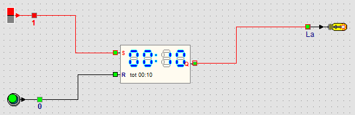

Lernpfad › Fortgeschrittene › Lektion 20 von 27

Der Schrittzähler aus Lektion 19 zählt Impulse: Wie schnell sie kommen, spielt keine Rolle. Die Stoppuhr misst, wie lange der Eingang S ein ist. Darum braucht sie keinen Impulsgeber: Ein gewöhnlicher Schalter genügt.
Schauen Sie auch auf die Statusleiste unten: Steht die Maus auf der Stoppuhr, lesen Sie dort die Zeit und die Endzeit.
Lassen Sie die Lampe erst nach 1 Minute angehen. Und nach 2 Minuten und 30 Sekunden?
Stoppen Sie die Simulation, entsperren Sie die Stoppuhr (Rechtsklick, Entsperren) und wählen Sie mit der rechten Maustaste Bis 01:00. Für 2 Minuten und 30 Sekunden wählen Sie Andere Endzeit... und tippen 02:30.
Zählen Sie, wie viele Minuten der Schalter schon ein ist, mit einer Stoppuhr und einem Schrittzähler.
Wählen Sie bei der Stoppuhr Bis 01:00 und schalten Sie Wiederholen ein. Nach jeder Minute beginnt sie wieder bei 00:01 und Q gibt ein Signal von einer Sekunde. Verbinden Sie Q mit dem Eingang T eines Schrittzählers: Er zählt jetzt die Minuten.
Lassen Sie einen Motor laufen, bis die Zeit um ist. Danach soll er stillstehen.
Q geht erst an, wenn die Zeit um ist; der Motor soll genau das Gegenteil tun. Setzen Sie darum ein NICHT-Gatter zwischen Q und den Eingang L des Motors. Solange die Zeit läuft, ist Q aus und der Ausgang des NICHT-Gatters ein: Der Motor läuft. Bei der Endzeit geht Q an und der Motor hält an.